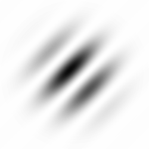

<!DOCTYPE html>
<html>
  <head>
    <title>Reality vs Imagination</title>
    <!-- Get all the required libraries -->
    <script src="https://unpkg.com/jspsych@8.2.2"></script>
    <script src="https://unpkg.com/fabric@7.1.0/dist/index.min.js"></script>
    
    <script src="https://unpkg.com/@jspsych/plugin-call-function@2.1.0"></script>
    <script src="https://unpkg.com/@jspsych/plugin-html-button-response@2.1.0"></script>
    <script src="https://unpkg.com/@jspsych/plugin-image-button-response@2.1.0"></script>
    <script src="https://unpkg.com/@jspsych/plugin-html-slider-response@2.1.0"></script>
    <script src="https://unpkg.com/@jspsych/plugin-survey-html-form@2.1.0"></script>
    <script src="https://unpkg.com/@jspsych/plugin-image-slider-response@2.1.0"></script>
    <script src="https://unpkg.com/@jspsych/plugin-instructions@2.1.0"></script>
    <script src="https://unpkg.com/@jspsych/plugin-preload@2.1.0"></script>
    <script src="https://unpkg.com/@jspsych/plugin-image-keyboard-response@2.1.0"></script>
    <script src="https://unpkg.com/@jspsych/plugin-html-keyboard-response@2.1.0"></script>
    <script src="https://unpkg.com/@jspsych/plugin-animation@2.1.0"></script>
    <script src="https://unpkg.com/@jspsych/plugin-canvas-keyboard-response@1.1.3"></script>
    <script src="https://unpkg.com/@jspsych-contrib/plugin-pipe"></script>


    <script src="jspsych-psychophysics.js"></script>
    
    <script src="fabric.js"></script> 
    <!-- Tutorial:  https://fabric5.fabricjs.com/fabric-intro-part-1#images -->

    <link href="https://unpkg.com/jspsych@8.2.2/css/jspsych.css" rel="stylesheet" type="text/css" />  
    
    
  </head>
  <body></body>
  <script>

    //Initialize jsPsysch
    const jsPsych = initJsPsych({
      on_finish: () => {
        jsPsych.data.get().localSave('csv', filename)
        jsPsych.data.displayData()
      }
    });

    // subject id
    const subject_id = jsPsych.randomization.randomID(10);
    const filename = `${subject_id}.csv`;

    jsPsych.data.addProperties({participantID: filename});


    // Experiment parameters
    let dynamic_noise_duration = 2000 
    let single_frame_duration = 100
    let canvas_size = [400, 400]

    // stimuli parameters 
    const noise_imgs_dim = [250,250]  // read from image files
    const gabor_img_dim = [250,250]   // read from image files
    const gabor_scale = 1
    // let n_total_frames = Math.round(dynamic_noise_duration/single_frame_duration)
    // let n_sets_of_noise_imgs = Math.ceil(n_total_frames/noise_imgs.length)


    // Get noise images ready.
    let noise_files = [];
    let fabric_noise_imgs = []
    for (let i=0; i<50; i++){
        let img_src = 'imgs/rand_noise_'+i+'.png';

        noise_files.push(img_src)

        let Img = new Image();
        Img.src = img_src;
        let scale_noise = canvas_size[0] / noise_imgs_dim[0]

        let fabric_img = new fabric.Image(Img, {
              left:0, top:0,
              width:noise_imgs_dim[0], height:noise_imgs_dim[1],
              originX:'left', originY:'top',
        })
        fabric_img.scaleToWidth(canvas_size[0])
        
        fabric_noise_imgs.push(fabric_img)

    } 
    
    // get gabors
    let gabor_left_img = new Image();
    gabor_left_img.src = 'imgs/gabor_left.png'

    let gabor_right_img = new Image();
    gabor_right_img.src = 'imgs/gabor_right.png'

    let gabor_img_properties = {
              left:canvas_size[0]/2, top:canvas_size[1]/2,
              width:gabor_img_dim[0], height:gabor_img_dim[1],
              opacity: 1,
              originX:'center', originY:'center',
              // scaleX: canvas_size[0] / gabor_img_dim[0], scaleY:canvas_size[0] / gabor_img_dim[0]
        }

    let gabor_left_fabric_img = new fabric.Image(gabor_left_img,  gabor_img_properties )
    let gabor_right_fabric_img = new fabric.Image(gabor_right_img, gabor_img_properties)

    gabor_left_fabric_img.scaleToWidth(canvas_size[0]*gabor_scale)
    gabor_right_fabric_img.scaleToWidth(canvas_size[0]*gabor_scale)

    const preload = {
        type: jsPsychPreload,
        images: [...noise_files, 'imgs/gabor_left.png', 'imgs/gabor_right.png']
    }


    function make_trial(gabor_tilt, gabor_opacity, noise_duration=null) {

      let interval_ID 
      let timestamp;
      let delta_times = []
      let gabor_fabric_img = (gabor_tilt == 'left') ? gabor_left_fabric_img : gabor_right_fabric_img

      let canvas_noise_animation_fabric = {
        type: jsPsychCanvasKeyboardResponse,
        canvas_size: canvas_size,
        trial_duration: noise_duration,
        stimulus: function (c) {

          fabric_noise_imgs = jsPsych.randomization.shuffleNoRepeats(fabric_noise_imgs)
          
          // initialize canvas and timestamp
          timestamp=performance.now()
          let canvas = new fabric.StaticCanvas("jspsych-canvas-stimulus", {backgroundColor:'cyan', centeredScaling:true});
          let nth_frame = 0

          interval_ID = setInterval( () => {

            gabor_fabric_img.opacity = gabor_opacity // set opacity of gabor

            // clear canvas of all objects and show new frame 
            canvas.remove(...canvas.getObjects()) 
            canvas.add(fabric_noise_imgs[nth_frame]); nth_frame = (nth_frame + 1) % noise_files.length // show nth noise stim and increment index
            canvas.add(gabor_fabric_img);
            canvas.renderAll()

            // register frame durations
            delta_times.push(Math.round(performance.now()-timestamp))
            timestamp=performance.now()
          }, 
          single_frame_duration);   
        },      
        choices: ['ArrowLeft', 'ArrowDown', 'ArrowUp','ArrowRight'],
        on_finish:(data) => { 
          data.gabor_opacity = gabor_opacity
          data.gabor_tilt = gabor_tilt
          data.frame_times = delta_times
          
          clearInterval(interval_ID) }
      } 

      return canvas_noise_animation_fabric
    }

    const vividness_rating_mouse = {
        type: jsPsychHtmlSliderResponse,
        stimulus:'How vividly did you imagine a grating?',
        labels: ['1', '2', '3', '4', '5'],
        min:1,
        max:5,
        slider_start:3,
        require_movement:true,
    };

    const vividness_rating_keyboard = {
        type: jsPsychHtmlKeyboardResponse,
        stimulus:'How vividly did you imagine a grating?',
        choices: ['1', '2', '3', '4', '5'],
        prompt:'<p>Indicate with by pressing a number key between 1 and 5.</p><p>1: "not at all"<br>5: "very vivid" </p>'
    };

    
    let instruction_speeded_responses = {
      type: jsPsychHtmlButtonResponse,
      stimulus: ""+
                  "<p>In the next trials you will see either a leftward or rightward or no grating. indicate with the arrow keys which one you saw.</p>"+
                   '<p>Press left arrow for "left grating", down arrow for "no grating", right arrow for "right grating"</p>',
      choices: ['Start'],
    }


    let instruction_imagination_right = {
      type: jsPsychHtmlButtonResponse,
      stimulus: ""+
                  "<p>Try to imagine seeing the right tilited grating (the rightmost image) in the noise you will see next.</p>",
      choices: ['Start'],
      data:{imagination_insctuction: 'right'}
    }

    let instruction_imagination_left = {
      type: jsPsychHtmlButtonResponse,
      stimulus: ""+
                  "<p>Try to imagine seeing the left tilited grating (the leftmost image) in the noise you will see next.</p>",
      choices: ['Start'],
      data:{imagination_insctuction: 'left'}
    }

    // for each participant randoml choose one to be the instruction
    let instruction_imagination = jsPsych.randomization.sampleWithoutReplacement([instruction_imagination_left, instruction_imagination_right], 1)[0];


    let timeline = [ 
          preload,
          instruction_imagination,
          make_trial('left', 0, 2000),
          vividness_rating_keyboard,
          instruction_imagination,
          make_trial('left', 0, 2000),
          vividness_rating_mouse,
          make_trial('left', 0, 2000),
          vividness_rating_mouse,
          instruction_speeded_responses,
          instruction_imagination,
          make_trial('left', 1, 5000),
          make_trial('right',1, 5000),
          make_trial('right',1, 5000),
   ]


    jsPsych.run(timeline);        

  </script>
</html>